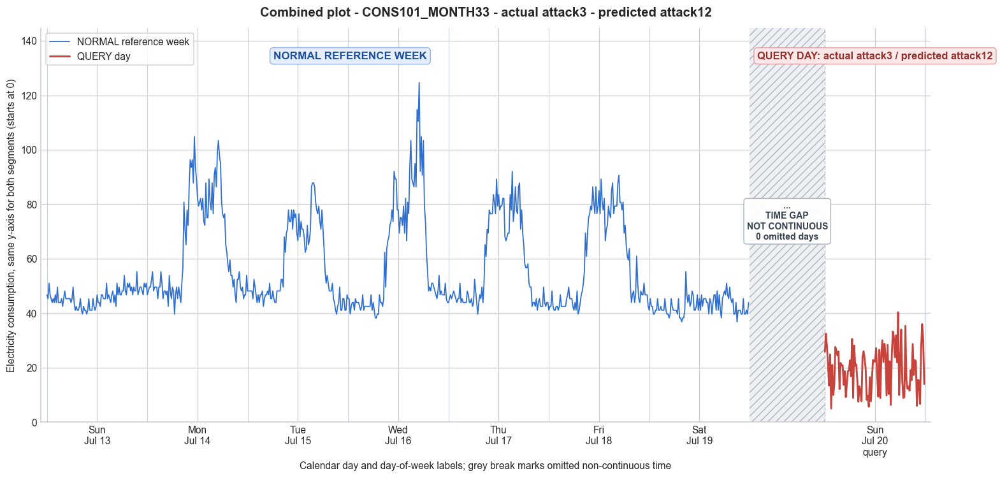

CONS101_MONTH33 · actual attack3 · predicted attack12
- Pair
- CONS101_MONTH33
- GT
- attack3
- Prediction
- attack12
- Binary GT
- attacked
- Binary Prediction
- attacked
- Source
- E010
- Parse
- stored
- Date
- 2014-07-20
- Weekday
- Sunday
- Latency
- 2.76 min
- Tokens
- 12006

Final output
Classification: - Manipulated Identified_Attack: - Most Likely: Attack 12 - Confidence: Medium - Reasoning: The query day consumption pattern deviates completely from the reference Sunday. The original Sunday is nearly flat with a mean of 45.84 and low variability (std 3.22), while the query day shows a highly irregular pattern with a mean of 19.39 and std 8.20. The pattern contains realistic low-level baselines (5–15) with intermittent spikes (up to 40.35), resembling a genuine but lower-usage consumer profile. This is consistent with Attack 12, where the attacker replaces their data with another user’s pattern. Attack 3 is ruled out because the query pattern does not preserve the subtle shape of the original Sunday (e.g., the dip and late peak are absent even after accounting for multiplicative noise). Attack 5 is considered but yields independent random samples, which would typically lack the temporal coherence and sustained low/high periods seen here, making the structured appearance of the query day more indicative of a real consumption pattern injection. Attack_Behavior_Explanation: - The attacker replaces the entire day’s consumption readings with those of a lower-consuming user. The original Sunday values (range 39.66–55.24) are discarded; instead, a completely different pattern is injected, featuring a low baseline around 5–15 with occasional usage spikes up to ~40. - Magnitude is substantially reduced (daily mean drops from 45.84 to 19.39). The trend is entirely altered, shifting from a nearly constant profile to a variable pattern with distinct peaks and troughs that do not align with the original time-of-day shape. - Possible technical cause: false data injection, where the attacker intercepts the meter’s communication and substitutes the actual readings with pre‑recorded or real‑time data from a different meter.
Prompt
You are a domain expert in smart grid security and electricity theft analysis, with deep knowledge of non-technical loss (NTL) attack patterns in smart meters. You are given: 1. A plot of one week of original (normal) energy consumption for a smart meter, provided as context for the customer's typical consumption behavior. 2. A plot of one day of energy consumption for the same smart meter, which may or may not be manipulated. Below are common attack types, each defined by how consumption values are altered, their impact on magnitude and trend, and their possible technical causes. Attack 0: Generated by replacing all electricity consumption samples with zero values for the entire observation duration. Simulates a scenario where no energy usage is reported at all. May be caused by a total meter bypass or severe meter malfunction. Completely eliminates both the trend and magnitude of the consumption profile. Attack 1: Multiplies the actual energy consumption by a constant random value between (0,1). The lower the factor, the higher the severity. Can be triggered by meter bypass, magnetic interference, reverse current, and false data injection. The consumption trend remains the same but the magnitude is uniformly reduced. Attack 2: Generated by replacing consumption samples with zeros for a random duration. Also known as an on-off attack. Can be caused by full meter bypass, false data injection, and reverse current. Changes both the trend and amplitude. Attack 3: The actual consumption is multiplied by different random factors between 0 and 1, with a unique factor per sample. Similar to Attack 1 but the scaling factor varies per reading. Caused by meter bypass, magnetic interference, and reverse current. Changes both the trend and amplitude. Attack 4: Simulates energy theft over a randomly selected period within the observation window. All measurements in that period are reduced. Caused by meter bypass, magnetic interference, reverse current, and false data injection. Changes both the trend and amplitude. Attack 5: Each sample is replaced by a false value obtained by multiplying the average normal consumption by a random variable between 0 and 1, with a different variable per sample. Caused by false data injection. Produces a completely different pattern from the original consumption profile, changing both trend and magnitude. Attack 6: A random cut-off point is selected and all consumption values above it are replaced by that cut-off value. The attacker avoids exceeding a predefined maximum limit. Mainly caused by false data injection. Changes both the trend and amplitude. Attack 7: A random cut-off point is subtracted from each sample; if the result is negative, zero is reported. Similar to Attack 6 but replaces exceeding values with zero instead of the cut-off point. May be caused by false data injection or total meter bypass. Does not change the trend but reduces overall consumption. Attack 9: All samples are replaced by the average daily energy consumption, resulting in a flat constant profile. Easily detectable because constant consumption does not reflect normal customer behavior. Caused by false data injection. Eliminates all trends. Attack 10: Reverses the consumption pattern without reducing the total amount. Applicable when the electricity company uses time-varying pricing, allowing the attacker to shift high consumption to off-peak periods. Caused by false data injection. Changes the trend without decreasing total consumption. Attack 12: The attacker replaces their consumption pattern with that of a lower-consuming user. The legitimate user unknowingly pays the adversary's electricity bill. Caused by false data injection. Attack IEEE: For each 15-minute interval across the entire day, the consumer either reports the actual electricity consumption or substitutes it with zero. The result is a profile where some intervals reflect real consumption while others are zeroed out, creating an irregular pattern across the full day. May be caused by false data injection. Changes both the trend and amplitude. Given the two plots, determine: 1. Whether the day is attacked or original - compare the flagged day against the normal week and assess whether the consumption pattern is consistent with normal behavior or shows signs of manipulation. If the day is consistent with the customer's typical consumption behavior, classify it as original and provide no further analysis. If manipulation is detected, proceed to point 2. 2. Which attack type this most likely is - identify the single most probable attack and justify your choice based on how the flagged day deviates from the normal week. 3. The behavior of the identified attack - explain how the consumption values are manipulated, their impact on magnitude and trend, and the possible technical causes behind this type of attack. Output Format: Classification: - Original | Manipulated Identified Attack: (fill only if manipulated) - Most Likely: Attack X - Confidence: High | Medium | Low - Reasoning: Why it matches Attack X and why Attack Y and Attack Z were ruled out (list top 2 alternatives considered) Attack_Behavior_Explanation: (fill only if manipulated) - How consumption values are manipulated relative to the normal week - Impact on magnitude and trend - Possible technical causes
Reasoning content
We are asked to determine if the query day is original or manipulated. The reference week shows a typical pattern for a summer Sunday (Day 0 is Sunday, dow=6, cal_month=7). The query day is also on Sunday (dow=6, cal_month=7). So we compare the query day (DAY_ID=0) to the reference week's Day 0 and overall week patterns. Reference week Day 0: min=39.66, max=55.24, std=3.22, mean=45.84. The values are consistent, with a small range (39.66–55.24) and low std. The pattern seems fairly flat, typical for a low-usage Sunday. The other days (especially weekdays) show higher peaks, but Sundays (Day 0 and Day 6) are low and flat. Day 6: min=36.83, max=55.24, std=3.31, mean=42.83. So Sundays are low consumption days. Query day: min=4.96, max=40.35, std=8.20, mean=19.39. This is drastically lower than the reference Sundays. The max is 40.35, which is below the min of reference Sunday (39.66? Actually reference Day 0 min is 39.66, so query max 40.35 is barely above that min, but mean is 19.39 vs 45.84, a reduction of about 58%. The std is higher relative to the mean, indicating more variability. The query day's values vary significantly, with many readings below 20, and some as low as 4.96. The pattern does not look like a Sunday flat profile; it's more erratic with spikes (e.g., 40.35, 35.96, 33.98, etc.). It's clearly not consistent with the normal Sunday pattern. Therefore, the day is manipulated. Now, we need to identify the most likely attack type from the list. We have 15-minute interval data for a full day (96 readings). The query day values are all positive but significantly reduced compared to the reference Sunday. They are not all zero (so not Attack 0). They are not constant (mean 19.39, varying). There is no flat constant profile (Attack 9 would be constant). Attack 10 reverses pattern without reducing total amount, but here total consumption is reduced (mean is halved). Attack 12 replaces with a lower-consuming user's pattern, but the pattern here seems erratic, not necessarily matching a known user. Attack IEEE: some intervals zero, some real. In query day, we see many low values but few zeros? The min is 4.96, so no zeros. So not Attack IEEE (which has zero substitution). Attack 2: on-off attack, zeros for random durations, but here no zeros. Attack 7: subtract cut-off, replace negatives with zero, but we don't see zeros, and the values are not uniformly reduced; they are scattered. Attack 5: replace each sample with false value obtained by multiplying average normal consumption by random variable (0,1). That would produce completely random values around some reduced level, but the pattern might not resemble original. But our query day still shows some variability, but is it completely different pattern? Let's compute the average normal consumption for reference Sunday: mean about 45.84. If we multiply by random numbers between 0 and 1, we'd get values between 0 and 45.84, which matches the range (4.96-40.35). However, Attack 5 says "different pattern from original consumption profile", i.e., no correlation with the original pattern. Our query day appears to have a pattern: some spikes (e.g., 40.35, 35.96, 33.98) at certain times. Could it be a scaled version? Attack 1 multiplies by a constant factor. If we multiply the reference Day 0 by a constant factor, the mean would be factor*45.84. Query day mean is 19.39, factor = 0.423. That would scale down the flat profile to mean 19.39, but the original Day 0 had values from 39.66 to 55.24, scaled to 16.8–23.4 (approx). But query day has values as low as 4.96 and as high as 40.35, with a std of 8.20. Original Day 0 std was 3.22, scaled would be 1.36. So scaling would result in much lower std, but query day has higher std. So constant scaling is unlikely. Attack 3 multiplies by different random factors per sample. That could introduce variability, but it would still roughly follow the original trend. Attack 4 reduces consumption over a randomly selected period, but the reduction is uniform? Not sure. Attack 6 replaces values above a cutoff with that cutoff, but that would cap values, not produce spikes. Attack 7 subtracts a cutoff, making zeros for below. Not matching. Let's examine the query day values more closely. The query day values: 25.83, 32.45, 27.67, 20.90, 13.40, 24.85, 4.96, 20.99, 9.96, 13.87, 27.60, 26.20, 24.47, 25.91, 12.10, 21.69, 20.84, 20.82, 13.70, 18.73, 9.18, 13.89, 18.65, 19.00, 22.64, 16.80, 30.54, 8.86, 28.11, 20.80, 21.19, 15.39, 7.49, 13.11, 11.26, 7.63, 23.90, 26.02, 23.26, 19.53, 8.17, 9.65, 5.64, 16.53, 7.63, 15.81, 22.81, 22.29, 22.20, 27.13, 16.99, 9.34, 26.56, 8.83, 25.13, 30.04, 22.09, 28.74, 24.74, 9.78, 28.36, 10.33, 22.33, 6.29, 24.88, 33.25, 31.03, 23.78, 31.86, 21.94, 40.35, 9.95, 21.49, 33.98, 15.45, 8.85, 9.21, 35.36, 15.27, 12.27, 13.08, 11.58, 19.12, 15.38, 28.66, 17.29, 22.76, 22.38, 5.97, 15.45, 15.30, 6.68, 26.95, 35.96, 30.23, 13.95 These values show a lot of fluctuations, but there are peaks around mornings and evenings? For a Sunday, a typical pattern might be low and flat, but here it's fluctuating. However, Attack 5 generates completely random values using average consumption times random. That could yield this kind of erratic pattern. Attack 3 multiplies each sample by a random factor, but that would still follow the original shape. The reference Day 0 is very flat, so multiplying each sample by a different random factor would still yield a relatively flat but noisy series. But query day shows much larger relative variations: from 4.96 to 40.35, where the original range was 39.66-55.24. Multiplying by a random factor between 0 and 1 could produce any value in that range, but with a flat original, the variations would be purely due to the random factor. That might produce the observed pattern. However, Attack 5 specifically says "each sample is replaced by a false value obtained by multiplying the average normal consumption by a random variable between 0 and 1, with a different variable per sample." That means the false value is not related to the original sample value, only to the average. So it would produce a series where each value is independent random, centered around half the average. That would be very erratic, with no correlation to original time-of-day pattern. That seems plausible. Attack 3: "The actual consumption is multiplied by different random factors between 0 and 1, with a unique factor per sample." So it's original sample * random. That preserves the shape, just adds multiplicative noise. Since reference Day 0 is flat, multiplying each sample by a random number would turn it into a flat but noisy series with similar magnitude range. But the query day has large swings (4.96 to 40.35) and the original range is narrow. If the random factors were between 0 and 1, the maximum possible value would be max(original)=55.24, minimum possible 0. The observed min 4.96 is plausible, and max 40.35. The original is flat around ~45, so with random factors, the values would be scattered around ~22.5 on average, with std depending on the factor distribution. The original std is 3.22, which would be amplified? Not exactly: if original value is constant c, then c*U gives series with mean c*0.5 and std c*std(U) (about 0.2887c for uniform [0,1]). For c=45, mean=22.5, std~13. The observed std is 8.20, which is lower but within range depending on the random factors. So Attack 3 could produce this. But is there any pattern? The query day has some temporal structure: there are higher values at certain times, like the first few readings around 25-32, then drops, then peaks at 30.54, 28.11, etc. The original Day 0 was almost flat, so any pattern in query day would be entirely from the random multipliers. But if the random multipliers are applied per sample, there is no reason for temporal clustering of high values. The values in query day do seem to cluster: e.g., the first 10 readings are relatively high (many >20) and then later there are low clusters. Could be just random. I need to consider if the pattern resembles a scaled version of some other day? The query day is Sunday, and reference Sunday is flat. But maybe the attacker used a different day's pattern? Attack 12: "The attacker replaces their consumption pattern with that of a lower-consuming user. The legitimate user unknowingly pays the adversary's electricity bill." That would mean the pattern matches some other consumer's typical behavior. We have no other consumer data, so we can't directly assess, but the pattern here might resemble a low-consuming household with some activity. The pattern has peaks at times that might correspond to morning and evening usage, but not strongly. Given only one week of reference for this meter, if the attacker replaced with a lower-consuming user's pattern, it would look like a different pattern entirely. Could be Attack 12, but we have no basis to compare to another user. The description says "caused by false data injection" and is not typical of meter bypass etc. The query day is a Sunday, but the pattern seems more like a weekday? Not sure. Attack 5 generates random numbers based on average normal consumption. That would produce an unpredictable series, not necessarily matching any typical usage pattern. Attack 3 is multiplicative noise, which would still follow the original shape but scaled with noise. Since the original is virtually constant on Sunday, Attack 3 and Attack 5 might be hard to distinguish. However, Attack 5 explicitly says "producing a completely different pattern from the original consumption profile, changing both trend and magnitude." Attack 3 says "changes both the trend and amplitude." Both change trend and amplitude. The key difference: Attack 3 multiplies actual consumption, so the resulting values are correlated with the original time-series shape, albeit with sample-specific noise. Attack 5 multiplies the average normal consumption, so it's entirely independent of the original shape. In this case, since the original Sunday shape is flat, the correlation would be zero whether it's Attack 3 or Attack 5. But if we compare the query day to the reference Sunday, the correlation is essentially zero because reference is flat. So we can't distinguish based on correlation. But we can look at the distribution: Attack 3: original*U, so the values are within [0, max(original)], with distribution roughly symmetric around half of original if original is constant. Attack 5: average*U, so values are within [0, average], distribution uniform scaled. For original Day 0 average=45.84, max=55.24. Attack 3 max possible 55.24, Attack 5 max possible 45.84. Query day max is 40.35, which is below 45.84, so it's consistent with both. The observed mean is 19.39, which is 0.423 of average (45.84). Attack 5's expected mean would be avg*0.5 = 22.92, which is higher than 19.39, but could be due to random variation (but with 96 samples, mean of uniform [0,1] times constant 45.84 would be 22.92, std dev 13.23, observed mean 19.39 is about 1.3 std below, plausible but maybe borderline). Attack 3 would have expected mean = original mean * 0.5 = 45.84*0.5=22.92 as well, same, so no difference. Given the difficulty, let's consider other attack types. Attack 4: "Simulates energy theft over a randomly selected period within the observation window. All measurements in that period are reduced." This could produce a pattern where part of the day is normal and part is reduced, or all reduced depending on the period. If the period covers the whole day, then all measurements are reduced, similar to scaling. But Attack 4 says "reduced" not necessarily by a constant factor. Could be by a random amount? The definition: "All measurements in that period are reduced." Unclear if reduced by a fixed amount or factor. In the context of NTL attacks, it might be a constant subtraction or scaling. Not specified. It might produce a pattern where some hours are normal and some are lower. But in the query day, all values are low, no values near normal Sunday range (39-55). The max is 40.35, which is lower than the normal min (39.66). So if it's a period attack, the entire day must be within the reduced period, meaning all measurements reduced. That would be equivalent to a constant reduction (Attack 7 kind) or scaling. Attack 7 subtracts a cutoff, making all values lower, but then any original value below cutoff becomes zero. But we see no zeros, so cutoff would have to be less than min(original)? If cutoff < 39.66, then subtraction would yield positive values, but the reduction would be constant. For example, if cutoff = 20, then original values 39.66-55.24 become 19.66-35.24. Query day values are 4.96-40.35, which includes values lower than 19.66, so not consistent with a constant subtraction because min would be 19.66. Unless the cutoff varies? Attack 7 is just a single cut-off point. Attack 6: cut-off replaces values above with cut-off. If the cut-off is set to something, all values above become the cut-off. The original Sunday is mostly above 39.66. If cutoff is 40, then many values would be capped at 40, resulting in many 40s. Query day has max 40.35, but not many exact 40 values. So not Attack 6. Attack 2: on-off attack with zeros, but no zeros. Attack IEEE: some intervals real, some zero. No zeros. Attack 0: all zeros, no. Attack 1: constant multiplier, ruled out due to increased variability. Attack 9: constant average, not constant. Attack 10: reversal without reduction, not. Attack 12: replacing with lower user pattern. That is plausible because the pattern looks like a real consumption pattern but from a lower-consuming user (maybe a household with some activity, but low usage). The query day has values that rise and fall, suggesting times of usage. There is a spike at index 70 (40.35), and other spikes at indices 1, 26, etc. This might mimic a real occupant's behavior. The reference Sunday for this meter was very flat, almost like no one was home? But it had some usage (min 39.66). Actually, a flat consumption around 40-55 could be background load (refrigerator, etc.) and no occupancy. The query day shows more occupancy-like pattern: lower baseline (perhaps background) and spikes. But the baseline is around 10-20, and spikes go up to 40. That could be consistent with a different household that has lower base load and some appliance usage. Attack 12 is "caused by false data injection", which is plausible. However, the attacker would need to know the pattern of a lower-consuming user. Could be. But out of all, Attack 5 and Attack 3 seem most likely given the randomness and reduction. Let's see the definitions again: Attack 3: "The actual consumption is multiplied by different random factors between 0 and 1, with a unique factor per sample. ... Changes both the trend and amplitude." Attack 5: "Each sample is replaced by a false value obtained by multiplying the average normal consumption by a random variable between 0 and 1, with a different variable per sample. ... Produces a completely different pattern from the original consumption profile, changing both trend and magnitude." Given that the original Sunday consumption profile is very flat, both attacks would yield a similarly flat but noisy reduced signal. The key might be whether the attack uses actual consumption or average normal consumption. The average normal consumption is constant for the day, so Attack 5 would generate white noise around half the average. Attack 3 would generate noise that is proportional to each sample, but since the original is nearly constant, it's also essentially white noise. So they are indistinguishable here. But maybe the query day is not a Sunday? It says DAY_ID=0, which corresponds to the same day of week as reference Day 0? The metadata says for query day: DAY_ID=0, dow=6, dom=7. Reference week Day 0 had dow=6, dom=0. So it's a different Sunday. So it's still a Sunday. So the expected pattern is low flat. The query day is not flat, it's erratic. This could indicate a data-driven attack where the attacker replaces the day with a lower-consuming user's pattern, because a flat profile replaced with an erratic one suggests a different household's pattern was injected. Attack 12 seems appealing because the pattern appears structured: there are peaks and troughs that could correspond to real consumption behavior (e.g., morning activity, night load). It is not pure noise; there are sustained periods of low and high values. For instance, from reading 0 to ~31 (first 8 hours) values vary: start ~25, drop to 4.96, then oscillate. Then from ~32 to ~64 (next 8 hours) many values are lower, some spikes. From ~65 to end, more spikes. This doesn't look like independent random samples; it looks like a real consumption pattern but at a lower magnitude. Therefore, I lean toward Attack 12: the attacker replaced their consumption pattern with that of a lower-consuming user. That changes the trend completely and reduces magnitude (since the other user consumes less). The technical cause: false data injection. But we need to rule out Attack 3 and 5. If it were Attack 3 or 5, we'd expect more randomness without temporal structure. The query day shows temporal structure: higher values in the morning (first few hours), late night spikes, etc. Does the reference Sunday have any temporal structure? Reference Sunday Day 0 is almost constant: values range 39.66-55.24, but let's look at Day 0 values: 46.74, 45.33, 50.99, 46.74, 45.33, 43.91, 45.33, 43.91, 46.74, 43.91, 49.58, 43.91, 43.91, 43.91, 45.33, 42.49, 45.33, 48.16, 45.33, 45.33, 45.33, 45.33, 45.33, 43.91, 45.33, 49.58, 43.91, 41.08, 42.49, 41.08, 41.08, 42.49, 45.33, 41.08, 39.66, 42.49, 41.08, 41.08, 39.66, 41.08, 45.33, 41.08, 41.08, 41.08, 45.33, 42.49, 41.08, 42.49, 46.74, 43.91, 43.91, 42.49, 46.74, 46.74, 45.33, 45.33, 45.33, 50.99, 45.33, 46.74, 45.33, 43.91, 46.74, 48.16, 43.91, 46.74, 42.49, 50.99, 46.74, 49.58, 46.74, 46.74, 48.16, 48.16, 53.82, 48.16, 46.74, 50.99, 49.58, 50.99, 48.16, 49.58, 46.74, 49.58, 48.16, 48.16, 55.24, 46.74, 48.16, 49.58, 49.58, 48.16, 46.74, 50.99, 49.58, 50.99 Note there are slight variations: early morning values around 45-50, a dip to 39.66 around reading 34-36 (approx 8:30-9:00?), then back to 45, then late night peak at 55.24 around reading 86-87. So there is a subtle pattern: a small dip in mid-morning and a peak late evening. The query day's pattern does not align with that subtle pattern at all; it's entirely different. So it could be that the attacker injected a different pattern. Attack 3 would multiply the original by random factors, but that would roughly maintain the shape with noise, so maybe the dip and peak would still be visible albeit scaled and with noise. If we scaled the original Day 0 by random factors, the relative highs and lows would still be there: e.g., around the dip (readings 34-36) the scaled values would be lower than surrounding. But query day does not show a clear dip at that location. Instead, it has a low cluster later. Let's check query day values at those indices (remember 0-indexed, reading number 0-95). The original Day 0 dip at readings ~34-39 (index 34 to 39): Original: reading 34=41.08, 35=39.66, 36=42.49, 37=41.08, 38=41.08, 39=39.66. Query day readings at those indices: 34: 7.63, 35: 23.90, 36: 26.02, 37: 23.26, 38: 19.53, 39: 8.17. So no consistent dip, just random values. Original late peak around readings 86-95: 55.24, 46.74, 48.16, 49.58, 49.58, 48.16, 46.74, 50.99, 49.58, 50.99. Query day at 86-95: 5.97, 15.45, 15.30, 6.68, 26.95, 35.96, 30.23, 13.95, end at 95 (index 94=30.23, 95=13.95). So no correspondence. Attack 3 would preserve the pattern, so the peak would be at the same time. Since it's not, Attack 3 is less likely. Attack 5 does not preserve pattern, so that's possible. Attack 12 also does not preserve pattern, as it's a different user's pattern. Between Attack 5 and Attack 12, which is more likely? Attack 5 says "producing a completely different pattern", which fits. Attack 12 says "replaces their consumption pattern with that of a lower-consuming user", which also produces a different pattern. The key: is the query day pattern plausible as a real consumption pattern from another household? It seems like it could be real: there are some sustained periods of low consumption (e.g., 4.96, 5.64, 5.97, 6.29, etc. many readings in single digits) and periodic spikes that might correspond to appliance use. For example, a low base load (e.g., refrigerator, electronics) around 5-15, with occasional usage spikes to 30-40. That is realistic. In contrast, Attack 5 would generate independent random samples uniformly from 0 to average (45.84). That would produce a series that is completely uncorrelated and unlikely to show realistic temporal clustering. While random can create apparent clusters, the query day has some sustained low periods (e.g., readings 8-16: 13.87, 27.60, 26.20, 24.47, 25.91, 12.10, 21.69, 20.84, 20.82, 13.70, 18.73, 9.18, 13.89, 18.65, 19.00) – these are not completely random; they stay fairly consistent for a few readings. Over 15-min intervals, real usage patterns often have some persistence. Attack 5 with independent random per 15-min would be white noise and thus less likely to have such short-term correlations. So Attack 12 seems more plausible: it mimics a real user's consumption, which would exhibit autocorrelation. Also, the fact that the query day is a Sunday, but the pattern looks more like a weekday with morning activity, could indicate the attacker used a pattern from a different day type. Given this, I'll classify as Manipulated, and identify Attack 12 as most likely. Confidence medium, because Attack 5 could also produce a pattern that by chance looks structured, but given the realistic appearance, Attack 12 is more likely. Alternatives: Attack 3 (ruled out due to lack of correlation with original shape) and Attack 5 (possible but less plausible than a real pattern injection). Attack_Behavior_Explanation: - How consumption values are manipulated relative to the normal week: The attacker replaces the entire day's consumption readings with ones from a different, lower-consuming meter. This results in a consumption profile that is completely different from the customer's typical Sunday flat pattern, and the overall magnitude is substantially reduced (mean from ~45.84 to 19.39). The pattern now shows a mixture of very low baseline (around 5-15) with occasional spikes up to ~40, consistent with a different household's usage. - Impact on magnitude and trend: Magnitude is reduced by more than half; the trend changes from a nearly constant profile to a variable profile with peaks and troughs. - Possible technical causes: False data injection, where the attacker intercepts and modifies smart meter readings, substituting them with pre-recorded or real-time data from another meter. Output format as required.